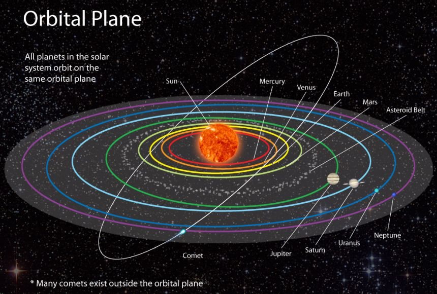

The solar system has one star, eight planets, five dwarf planets, at least 290 moons, more than 1.3 million asteroids, and about 3,900 comets. It is located in an outer spiral arm of the Milky Way galaxy called the Orion Arm, or Orion Spur. Our solar system orbits the center of the galaxy at about 515,000 mph (828,000 kph). It takes about 230 million years to complete one orbit around the galactic center. We call it the solar system because it is made up of our star, the Sun, and everything bound to it by gravity the planets Mercury, Venus, Earth, Mars, Jupiter, Saturn, Uranus, and Neptune; dwarf planets Pluto, Ceres, Makemake, Haumea, and Eris along with hundreds of moons; and millions of asteroids, comets, and meteoroids.
The planets and other large objects in orbit around the Sun lie near the plane of Earth's orbit, known as the ecliptic. Smaller icy objects such as comets frequently orbit at significantly greater angles to this plane. Most of the planets in the Solar System have secondary systems of their own, being orbited by natural satellites called moons. Many of the largest natural satellites are in synchronous rotation, with one face permanently turned toward their parent. The four giant planets have planetary rings, thin bands of tiny particles that orbit them in unison

While Earth is only the fifth largest planet in the solar system, it is the only world in our solar system with liquid water on the surface. Just slightly larger than nearby Venus, Earth is the biggest of the four planets closest to the Sun, all of which are made of rock and metal

Mars the fourth planet from the Sun is a dusty, cold, desert world with a very thin atmosphere. This dynamic planet has seasons, polar ice caps, extinct volcanoes, canyons and weather.

Jupiter is the fifth planet from the Sun and is, by far, the largest planet in the solar system more than twice as massive as all the other planets combined. Jupiter's stripes and swirls are actually cold, windy clouds of ammonia and water, floating in an atmosphere of hydrogen and helium.
Mercury is the smallest planet in the solar system, and it is also the planet closest to the Sun, making it the most difficult of the planets to see with the unaided eye. Because its rising or setting is always within about two hours of the Sun's, Mercury is never observable when the sky is fully dark.
Dark, cold and whipped by supersonic winds, giant Neptune is the eighth and most distant major planet orbiting our Sun. More than 30 times as far from the Sun as Earth, Neptune is not visible to the naked eye. In 2011, Neptune completed its first 165-year orbit since its discovery.
Saturn is the sixth planet from the Sun and the second-largest in the Solar System, after Jupiter. It is a gas giant with an average radius of about nine-and-a-half times that of Earth.
Pluto (minor-planet designation: 134340 Pluto) is a dwarf planet in the Kuiper belt, a ring of bodies beyond the orbit of Neptune. It is the ninth-largest and tenth-most-massive known object to directly orbit the Sun. It is the largest known trans-Neptunian object by volume, by a small margin, but is less massive than Eris
Venus is the second planet from the Sun. It is a terrestrial planet and is the closest in mass and size to its orbital neighbour Earth. Venus is notable for having the densest atmosphere of the terrestrial planets, composed mostly of carbon dioxide with a thick, global sulfuric acid cloud cover. At the surface it has a mean temperature of 737 K (464 °C; 867 °F) and a pressure of 92 times that of Earth's at sea level.

Uranus is the seventh planet from the Sun. It is a gaseous cyan-coloured ice giant. Most of the planet is made of water, ammonia, and methane in a supercritical phase of matter, which in astronomy is called 'ice' or volatiles. The planet's atmosphere has a complex layered cloud structure and has the lowest minimum temperature of 49 K (−224 °C; −371 °F) out of all the Solar System's planets. It has a marked axial tilt of 82.23° with a retrograde rotation period of 17 hours and 14 minutes